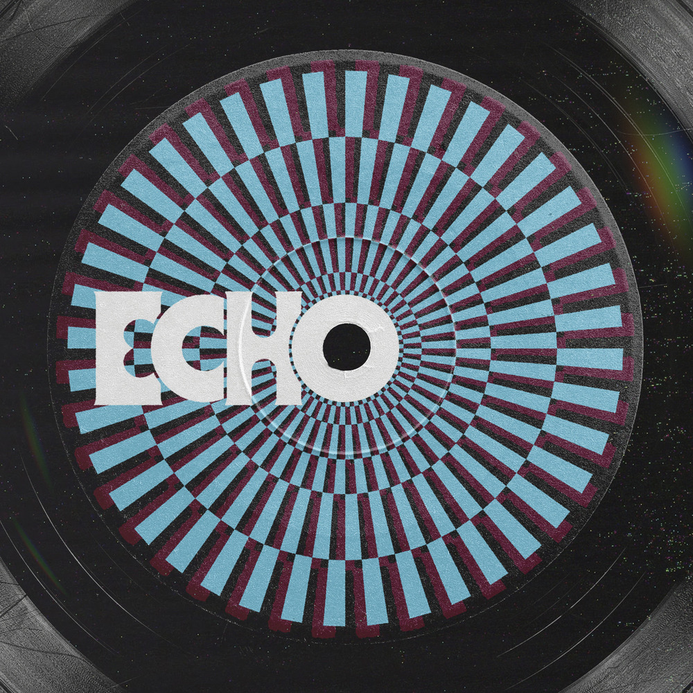

안녕하세요, 라보엠입니다.
오늘은 전 세계가 기다려온 BTS 진(Jin)의 두 번째 미니앨범 Echo의 타이틀곡 ‘Don’t Say You Love Me’를 소개하겠습니다. 2025년 5월 16일 공개된 이 곡은 발매와 동시에 아이튠즈 앨범 차트 1위, 스포티파이 글로벌 톱10 진입 등 뜨거운 반응을 얻으며, 진의 감성적 보컬과 한층 깊어진 음악 세계를 다시 한 번 입증했습니다.
드라마 같은 뮤직비디오와 스토리텔링
이번 곡의 뮤직비디오는 최용석 감독이 연출하고, 배우 신세경이 상대역으로 출연해 영화 같은 감동을 더했습니다. 영상은 진이 신세경을 멀리서 바라보는 장면으로 시작해, 흑백의 현실과 컬러의 추억이 교차하며 두 사람의 관계를 그려냅니다. 예술관에서 우연히 다시 마주치는 장면, 이별 후에도 지워지지 않는 감정, 그리고 마지막에는 진이 신세경의 차를 쫓아가 결국 재회하는 모습까지, K-드라마를 연상케 하는 감성적 서사가 곡의 여운을 극대화하고 있습니다.
가사 - 이별의 문턱에서 건네는 마지막 진심
I really thought I made up my mind
Hopped in the car and put it in drive
I tried to leave like a hundred times
But something’s stopping me every time
Oh
Faking a smile while we're breaking apart
Oh I never never never meant to take it this far
Too late to save me so don’t even start
Oh you never meant to hurt me
but you're making it hard
Don’t tell me that you’re gonna miss me
Just tell me that you wanna kill me
Don’t say that you love me
‘cause it hurts the most
You just gotta let me go
I really thought this was for the best
It never worked last time that I checked
I got this pain stuck inside my chest
And it gets worse the further I get
Oh
Faking a smile while we're breaking apart
Oh I never never never meant to take it this far
Too late to save me so don’t even start
Oh you never meant to hurt me
but you're making it hard
Don’t tell me that you’re gonna miss me
Just tell me that you wanna kill me
Don’t say that you love me
‘cause it hurts the most
You just gotta let me go
Lie to me, tell me that you hate me
Look me in the eyes and call me crazy
Don’t say that you love me
‘cause it hurts the most
You just gotta let me go
Let me go
Gotta let me go
Gotta let me
Don’t say that you love me
‘cause it hurts the most
You just gotta let me go
이 곡은 사랑이 끝나가는 순간, 서로를 놓지 못하는 두 사람의 복잡한 감정선을 그린 팝 발라드입니다. 관계의 균열을 느끼면서도 쉽게 이별을 받아들이지 못하는 마음, 그리고 그 안에서 피어나는 아픔과 혼란이 진의 섬세한 목소리로 담담하게 펼쳐집니다.
“Faking a smile while we’re breaking apart / Oh, I never, never, never meant to take it this far / Too late to save me, so don’t even start / Oh, you never meant to hurt me, but you’re making it hard.”
이처럼 가사는 이별의 순간에 서로를 위로하려다 오히려 더 상처 주는 현실, 그리고 ‘사랑한다’는 말조차 더 이상 위로가 되지 않는 슬픔을 솔직하게 드러냅니다.
음악적 특징과 진의 보컬
곡 전체는 멜랑콜리한 팝 사운드와 절제된 편곡, 그리고 진 특유의 맑고 호소력 짙은 보컬이 어우러져 아련한 분위기를 자아냅니다. 진은 고요하면서도 단단한 감정선으로, 이별의 쓸쓸함과 복잡한 내면을 섬세하게 표현합니다.
특히 영어 가사로 진행되는 곡은 글로벌 리스너들에게도 진의 감성을 온전히 전달하며, 누구나 공감할 만한 사랑의 보편적 아픔을 노래합니다.
‘Don’t Say You Love Me’는 발매와 동시에 밴드, 로파이, 디스코, 신스웨이브, 90s 팝, 퓨처 팝 등 다양한 리믹스 버전으로도 공개되어, 원곡의 감성을 여러 스타일로 즐길 수 있습니다. 특히 밴드 버전은 라이브 무대의 생동감을, 로파이 버전은 원곡의 쓸쓸함을 더욱 극대화합니다. 진은 5월 21일 NBC ‘지미 팰런 쇼’에서 이 곡의 라이브 무대를 선보일 예정이며, 올여름 첫 단독 월드투어도 예고해 팬들의 기대를 모으고 있습니다.
진의 음악적 성장과 메시지
이번 곡은 진이 군 복무를 마치고 돌아온 후 발표한 첫 신곡으로, 한층 성숙해진 감정선과 음악적 깊이가 느껴집니다.
‘Don’t Say You Love Me’는 사랑의 끝에서 마주하는 진짜 감정, 그리고 그 안에서 자신을 놓아주는 용기의 순간을 노래합니다.
진은 “이별의 아픔도 결국 나를 성장시키는 과정”이라고 밝히며, 앞으로도 다양한 장르와 메시지로 팬들과 소통할 계획임을 전했습니다.
맺음말
BTS 진의 ‘Don’t Say You Love Me’는 이별의 아픔을 가장 솔직하게, 그리고 아름답게 담아낸 곡입니다.
사랑이 끝나가는 순간에도 서로를 위로하고 싶은 마음, 그리고 그 안에서 피어나는 진짜 감정이 진의 목소리로 깊게 전해집니다.
오늘 하루, 이 곡과 함께 지나간 사랑과 성장의 의미를 조용히 되새겨보는 건 어떨까요?
진의 새로운 음악 여정도 계속 기대해봅니다.
